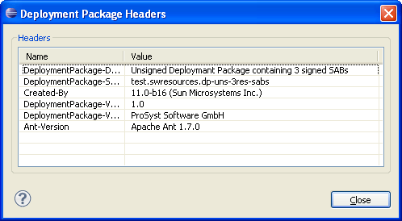

To view the content of the most specific headers of a package's manifest file by using mToolkit, in the Frameworks view right-click the package and select Deployment Package Headers. The Deployment Package Headers dialog appears showing the content of package's most important OSGi-defined manifest headers.

Figure 1: Viewing the content of a deployment package manifest headers.

OSGi Management Overview
OSGi Frameworks Tree